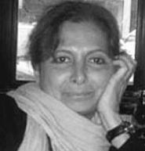

پذيرش > سایت نوشته ها > جبنش زنان با موانع فرهنگی و اجتماعی روبروست
 گفتگو با مهرانگيز کار گفتگو با مهرانگيز کار

 جبنش زنان با موانع فرهنگی و اجتماعی روبروست جبنش زنان با موانع فرهنگی و اجتماعی روبروست
25 خرداد 1387 - دويچه وله / شهرام اسلامي - نسخه قابل چاپ
دویچهوله: تا چه اندازه حقوق خانواده در ایران و یا دقیقتر، حقوق حمایت از خانواده در ایران پس از انقلاب دچار تغییر شده؟
مهرانگیز کار: خیلی زیاد. ما قبل ازانقلاب یکی از بهترین دستاوردهایی که داشتیم، عبارت بود از قانون حمایت از خانواده، که در سالهای ۱۳۴۶ و بعد ۱۳۵۳ به شکل اصلاحشدهای ناظر بر روابط زن و مرد و مادر کودک و بهطور کلی افراد خانواده با یکدیگر شد. قانون حمایت از خانواده قانون به نسبت زمانی که ما در آن زندگی میکردیم، بسیار مترقی بود. تا قبل از آن مردها میتوانستند زنهایشان را ببرند دفترخانه و یا غیابی طلاق بدهند و با پست هم طلاقنامهشان را بفرستند. زنها نسبت به بچهها حق حضانتشان بسیار محدود بود، در حالی که این قانون به صورت مترقی مصلحت طفل را در نظر گرفت و گفت که دادگاه بهر شکل که مصلحت طفل اقتدا میکند، میتواند دربارهی حضانت تصمیمگیری کند، یا به مرد بدهد، یا به زن، یا به هرکدام که صالحترند و یا به هیچکدامشان ندهد و به فرد ثالثی از خانواده بدهد، اگر تشخیص بدهد که اینها با مصالح کودک متناسب نیستند. اینها جدید بود. دادگاهها را بوجود آورد، خیلی جدید بود. چون پیش از آن ما اصلا دادگاهی نداشتیم برای این که دعوای طلاق را زن بتواند در دادگاه مطرح کند و یا مرد بتواند. و حق مطلق مرد را برای طلاق، يعنى حق نامحدود مرد را برای طلاق که مادهی ۱۱۳۳ قانون مدنی ایران در سال ۱۳۱۰ شامل مى شد، را محدود کرد. چندهمسری را محدود و کنترل کرد و گفت که باید با اجازهی زن قبلی باشد و یا این که دادگاه اجازه بدهد، و در غیر این صورت آن مرد از شش ماه تا یک سال حبس میشود و آن زنی هم که تن داده به این ازدواج حبس میشود، عاقد هم حبس میشود. در بحث ولایت هم مختصر کمکی کرد به زنها، یعنی در بحث سرپرستی نسبت به بچهها، و آن این بود که در مواردی مادر را همشأن پدربزرگ، جد پدری قرار داد که این هم باز یک حرکت بسیار مهمی بود. چون اصلا قابل قبول نبود که زن بتواند ولایت و سرپرستی فرزند را بگیرد، در جایی که جدی پدری زنده است. و موارد دیگری که حالا جای صحبت بیشتر نیست.
اینها وقایع بسیار خوبی بود که در قانونگذاری ایران برای زنان اتفاق افتاد و زنان امکان این را پیدا کردند که بروند دادگاه در مواردی و بگویند و اثبات بکنند که چرا از ادامهی این زندگی زناشویی ناراحتاند که به داوری گذاشته میشود و به هرحال دادگاه به جای مرد در این موارد زن را طلاق میداد. مجموعهی اینها را کسانی هم که معتقد به مبانی شرعی بودند تایید کرده بودند. مراجع بزرگ دیگری تاییدش نکرده بودند، از نظر شرعی.
به همین دلیل وقتی انقلاب شد، یکی از اقدامات بلافاصلهای که اتفاق افتاد این بود که اولا یک فتوا خواسته شد از آیتاله خمینی دربارهی قانون حمایت خانواده که ایشان هم نظر دادند که خب اگر این قانون خلاف شرع است، نباید اعتبارش حفظ بشود و بعدهم آیتاله خمینی فقهای شورای نگهبان را منصوب کردند و اینها موظف شدند که آنچه غیرشرعی، ويا در تعارض با شرع است، از قوانین ایران اعلام الغایش را بکنند، اعلام بیاعتباریش را بکنند. از اولین کارهایی که فقهای شورای نگهبان کردند این بود که گفتند آنچه در بحث طلاق یا ولایت و قیمومت در تعارض با قانون مدنی باشد ، اینها دیگر ملغاالاثر است، چون قانون مدنی را کاملا عین شریعت میدانستند و البته آن قانون مدنی که زمان رضاشاه تصویب شده بود همينگونه نيزهست. در نتیجه مجازات مردی که بدون اجازهی همسر اولش زن میگرفت، یا مجازات آن زن و یا مجازات عاقد اینها منتفی شد و بسیاری موارد دیگر هم منتفی شدند و همشأنی زن با جد پدری در موارد سرپرستی و ولایت بر فرزند نیز منتفی شد و دوباره مادهی ۱۱۳۳ قانون مدنی که به مرد اختیار نامحدود میدهد با طلاق اعتبار خودش را بهدست آورد، بعلاوه دادگاههای حمایت خانواده نیز منحل شدند. ولی البته بعدها جامعه تنشهای خودش را داشت، عکسالعملهای خودش را داشت و منجر شد به این که پله پله سعی کردند برگردند به وضعیت سال ۱۳۵۷.
آیا فکر میکنید قوانين به این وضعیت برگشته شده است؟
نه کاملا، ولی به هرحال نتوانستند بدون دادگاههای حمایت خانواده یا دادگاههای خانواده آن جامعه را مدیریت بکنند. در سال ۱۳۷۶ تعدادی از شعب دادگاهها را به مسایل خانواده اختصاص دادند و سعی کردند در مواردی به نفع زنان کاری بکنند، بدون این که این عدم تعادل بین حق طلاق زن و مرد را به تعادل رسانده باشند. یعنی همچنان این عدم تعادل وجود دارد، ولی اجازه دادهاند در مواردی مشاوران زن در دادگاههای خانواده حضور داشته باشند و همچنین قانونی از تصویب گذراندند که مهریه متناسب باشد با نرخ تورم و اگر مرد پول داشته باشد و بتواند مهریه را بپردازد، اما از پرداخت مهریه امتناع کند و نپردازد زندانی بشود.
همچنین یک حق مالی دیگری برای زنان بوجود آوردند بهنام اجرتالمثل و یا شروط ضمن عقد را در قبالههای نکاح چاپ کردند که باید گفت هیچکدام از اینها به آن بحث عدم تعادل حق طلاق کمک نکرده است و زنان وقتی مصرانه طلاق میخواهند و میتوانند چهار پنج سال در دادگاه گرفتار بشوند برای این که حق طلاق و مشقتشان را اثبات بکنند ، همهی این حقوق مالی را میبخشند و گاهی وقتها هم چیزی اضافه برآن را میدهند به مرد، تا این که طلاقشان داده بشود. ولی در مورد حضانت یک مقداری اصلاح شده و گفته شده است تا هفت سال پسر یا دختر حضانتش با مادر است و بعد از آن دادگاه تعیین میکند، ولی در مورد ولایت هیچ گونه بازگشت و رجعتی تا حالا وجود نداشته و به طور کلی میتوانیم بگوییم عکسالعملهای جامعه و واقعیات آن جامعه که یک تاریخ متحول را پشت سر داشته، باعث شده است که اینها حرکات خیلی آهستهای بکنند، برای رجعت به همان قانون حمایت خانواده. اما تا حالا این حرکت کامل نبوده است.
آیا امکان تغییر و یا بهبود حقوق زنان در خانواده، بدون نگرش بنیادی و تغییرات اساسی به حقوق، قابل تصور است؟
به نظر من خیر! به نظر من در قانون اساسی باید حتما اصلاحاتی بوجود بیاید و مخصوصا آن منبع قانونگذاری که ذکر شده است «فقط احکام شریعتی و مبانی اسلامی»، باید مبانی جهانی حقوق بشر و ضوابط جهانی حقوق بشر را بعنوان منبع قانون اساسی اصلاحشدهی ایران قبول بکند. در غیراین صورت من تصور نمیکنم که آسان باشد و برای این مکانیزم قانونگذاری که در حال حاضر وجود دارد و با وجود انتخاباتی که دموکراتیک نیست و ما نمیتوانیم ادعا بکنیم که اعضای پارلمان نمایندگان همه طیفهای فکری مردم ایران هستند، من گمان نمیکنم این امر، ممکن باشد. ولی گمان هم نمیکنم که بهبود وضعیت حقوق زنان در همین نظام کنونی امر غیرممکنی باشد. ارادهاش نیست. یعنی اگر ارادهاش بود، مثلا همین شورای نگهبان اراده میکرد که از طریق اجتهاد وارد عمل بشوند، چون قانون اساسی جمهوری اسلامی بر اجتهاد تاکید دارد، ممکن بود که در وضعیت حقوقی زنان بهبود بوجود بیاید.
مخصوصا که ما در ایران روحانیونی در حال حاضر داریم که اینها نظراتی دارند. البته این نظرات، نظراتی نیست که بر برابری حقوق زن و مرد را در نهایت مهر تایید بگذارد. ولی کاملا مبتنی است بر اصلاحات نظراتی که بعضا برخی آیتالهها و مراجع دینی میدهند. اینها میتواند پشتوانهی قانونگذاری و اصلاح قوانین قرار بگیرد. ولی البته آن نظر فقهی که بر فقهای شورای نگهبان غالب و حاکم است ، نظراتی فقهیست که با نظرات این آقایان کاملا در تضاد است و میشود گفت که نظریهایست که اجتهاد را نمیتواند قبول بکند. بنابراین با ترکیب کنونی فقهای شورای نگهبان و ترکیب کنونی مجلس و انتخاباتی که آزاد نیست.
آیا قوانین شرعی و تبدیلشان به قوانین مدون و لازمالاجرا ناچارا به تحول این قوانین و انطباقش با شرایط جامعهی فعلی منجر نمیشود؟
ببینید، الان فرض بر این است که قوانین شرعی مدون شده است. چون مثلا ما قانون مجازات اسلامی را داریم یا بعضی از اصلاحاتی که در قانون مدنی ایران اتفاق افتاده است. چون خود قانون مدنی که اساسا تدوین شدهی احکام شرع است، اصلاحاتی هم که آقایان در آن بوجود آوردهاند، بازگشت به سال ۱۳۱۰ است. بنابراین احکام شرع در بسیاری موارد مدون شده است. ولی اگر منظورتان این است که بازتاب اجتماعی اینها از نظر روند تحولات قانونگذاری چه میتواند باشد، به نظر من بازتاب این خواهد بود که این قوانین به نیازها و مطالبات امروزی مردم ایران جواب نمیدهد.
مردم ایران یک تاریخ تحولات بزرگ را پشت سر دارند، از انقلاب مشروطه به بعد و شاید تا حدود قبل از انقلاب مشروطه. (ایران) جامعهایست که حالا درست است اخیرا اعلام کردهاند نرخ بیسوادیاش خیلی بالاست، ولی بهرحال نرخ دانشگاه رفتههایش خیلی بالاست، نرخ کارشناسانش خیلی بالاست، تماسشان با فرهنگ و تمدن غرب خیلی زیاد بوده و حتا در دوران جمهوری اسلامی هم خیلی زیاد بوده است، از طریق وسایل ارتباطی جدید مثل ماهواره و اینترنت. یک چنین جامعهای را با اجرای این قوانین به نظر من اگر بخواهند شجاعانه دربارهاش داوری بکنند، حتا خود مدیران سیاسی کشور، باید متقاعد شده باشند که نمیشود با این قوانینی که معتقد هستند شرعیست، با این قوانین نمیشود مدیریتش کرد. اگر منظورشان این بوده که با این قوانین این جامعه را خیلی پاک میکنند، حالا بقول خودشان از گناه و معصیت و یا بقول ما از جرم و جنایت، این که نتیجهی عکس داده است! پس بنابراین اجرای این قوانین، جامعه را به آگاهی رسانده است.
منظورم فقط جامعه به طور کلی نیست، کارشناسان، نخبگان اینها به این نتیجه رسیدهاند که این قوانین حتما باید تغییر بکند، حتما باید عوض بشود. حتا بعضی از روحانیون هم متقاعد شدهاند به این موضوع که این قوانین به قوارهی این جامعه و تحولات و نیازها و مطالبات امروزی این جامعه و با شرایط جهانی هیچ گونه هماهنگی ندارد.
جنبش زنان به لحاظ نظری و عملی در حال حاضر با چه مشکلاتی روبهروست؟
جنبش زنان به لحاظ نظری با موانع فرهنگی و با موانع اجتماعی مواجه است و بخشی از این موانع فرهنگی و اجتماعی را باید در نوع نگرش دینی جستوجو کرد. یعنی آن نگرش دینی که بخشی از جمعیت ایران را دربرمیگیرد، امری که ما باید حتما آن را قبول کنیم. و چون هرگز فضا را باز نکردهاند برای این که نواندیشی دینی این اذهان را تغییر بدهد و این اذهان را اصلاح بکند، در نتیجه ما کماکان با این موانع فرهنگی و اجتماعی و دینی مواجه هستیم که مثلا معتقد است که پدر مالک جان و مال فرزندش است، یا این که شوهر حق خشونتورزی نسبت به زن دارد ، و زن حق اعتراض نسبت به خشونتهایی که متحمل میشود، را ندارد.
متاسفانه قانونگذار بجای این که فکری بکند برای اصلاح این وضعیت اجتماعی و فرهنگی، آمده است اینها را تبدیل به قانون کرده است. وگرنه ما این بینش را، یعنی بینش ضد زن را، حالا اگر هم نخواهیم بگوییم ضد زن، این بینش را که جنس زن یک جنس دوم است و تواناییهایش خیلی محدود است و فقط به درد تولید مثل میخورد و باید همهی گرفتاریها را در زندگی زناشویی تحمل بکند و به عبارت دیگر بسوزد و بسازد، این تفکر را آمده تبدیل به قانون کرده است و حتا به خشونتورزی نسبت به زنان آمده جنبهی قانونی داده است که باعث شده خشونت ترویج بشود. یعنی وقتی دیه نقص عضو که به علت ضرب و شتم عمدی اتفاق میافتد، برای زن نصف دیه نقص عضو برای مرد هست، به نظر شما این چیست؟ جز تشویق خشونت میشود نامی برایش پیدا کرد؟
بنابراین ما نیاز داریم به یک مکانیزم قانونگذاری و به ارادهای در حکومت که این اراده بخواهد آن تفکر را اصلاح بکند و نه این که آن تفکر را تقویت بکند در جهات خشونتورزی نسبت به زن، خشونتورزی نسبت به کودک و اساسا قبول نداشتن هیچ یک از اصول حقوق بشر.
سهم جنبش زنان برای این تغییری که اشاره کردید چه هست؟
سهم جنبش زنان به نظر من تاکنون اطلاعرسانی بوده. من سهم بیشتری از این جنبش تاکنون (ندیدهام)، با این که خودم از کسانی بودم که در آغاز... نه در آغاز انقلاب، ولی در آغاز دورانی که تا حدودی امکان حرفزدن و نوشتن پیش آمد، کار را شروع کردم. ولی معتقد هستم سهمی که تا کنون جامعه از جنبش زنان برده، تحولات بزرگی در قانونگذاری نبوده و اتفاقا بعضی وقتها لجاجت هم کردند. برای این که بعضی از قوانین را با وجود این که روحانیونی بودهاند که گفتهاند و میگویند میشود تغییر داد، مثل سن نه سالگی ورود به مسئولیت جزایی یا بسیاری موارد دیگر برای دخترها، با لجاجت همین قوانین را حفظ کردند. حتا میشود گفت که یک بخش از حاکمیت مثل این که در برابر جنبشهای اجتماعی دارد لجبازی میکند. ولی باید گفت، سهمشان در اطلاعرسانی هم به داخل ایران و هم به جامعه جهانی خیلی سهم خوبی بوده و نقش آنان، نقش بزرگی بوده است. کما اینکه میبینید در اینجا که ما نشستهایم، خب بهرحال پیداست که بخشی از جامعه جهانی به حرکتهای جنبش زنان در ایران خیلی نگاه میکند ، حتا به حرکتهای خیلی کوچکش خیلی زیاد بها میدهد. بعضی وقتها ما فکر میکنیم که این بهادادن بیشتر از واقعیت است.
منبع : دويچه وله
ارسال به
بالاترین
،
توییتر
،
فریندفید
،
فیسبوک
در همين بخش :
 یک خبر تلخ؟ یک قانونشکنی؟ یک تصمیم بخشنامهای جدید؟ یک خبر تلخ؟ یک قانونشکنی؟ یک تصمیم بخشنامهای جدید؟
چرا بایست به سکسوالیته پرداخت؟ / نفیسه آزاد
آزارجنسی خانگی؛ «قربانی» نه، «نجات یافته»
زنان، بزرگترین بازندگان بهار عرب
سانسور از دیدگاه جنسیتی/الهه امانی
ديگر بخش ها :
طرح یک میلیون امضا
|
مقالات
|
سایت نوشته ها
|
اخبار
|
گزارش كمپين
|
گفت و گو
|
علیه سکوت
|
كوچه به كوچه
|
نامه های شما
|
گزارش ویژه
|
گفتگو با اعضا
|
ویژه سالگرد کمپین
|
تصویر برابری
|
دل آرام علی
|
تریبون
|
مقالات
|
تاریخ شفاهی
|
خارج از چارچوب
|
کتابخانه
|
درباره کمپین
|
کمپین در شهرها
|
کمپین در بند
|
صدای تغییر
|
ویژه 22 خرداد
|
لایحه حمایت از خانواده
|
گالری
|
عشا مومنی
|
امیر یعقوبعلی
|
خدیجه مقدم
|
راحله عسگری زاده و نسیم خسروی
|
پروین اردلان،جلوه جواهری، مریم حسین خواه، ناهید کشاورز
|
زینب پیغمبرزاده
|
سعیده امین، سارا ایمانیان، محبوبه حسین زاده، ناهید کشاورز و همایون نامی
|
احترام شادفر
|
نسیم سرابندی زاده،فاطمه دهدشتی
|
وبلاگ مهمان
|
پرونده خرم آباد
|
دستگیری ها
|
مریم مالک
|
پرستو اللهیاری
|
مهرنوش اعتمادی
|
سمیه رشیدی
|
Other Languages
|
همراهان
|
«فراخوان کمپین ده روز با بهاره هدایت»
| English
|